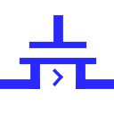

| Library: | Wiring |
| Introduced: | 2.7.0 |
| Appearance: |  |
A transistor has two inputs, called gate and source, and one output, called drain. When diagrammed, the source input and drain output are drawn connected by a plate; Logisim draws an arrowhead to indicate the direction of flow from input to output. The gate input is drawn connected to a plate that is parallel to the plate connecting source to drain. Logisim supports two types of transistors, with slightly different behaviors described below; the P-type transistor is indicated by a circle connecting the gate input to its plate, while the N-type transistor has no such circle.
Depending on the value found at gate, the value at source may be transmitted to drain; or there may be no connection from source, so drain is left floating. The determination of transmitting or disconnecting depends on the type of transistor: A P-type transistor (indicated by a circle on the gate line) transmits when gate is 0, while an N-type transistor (which has no such circle) transmits when gate is 1. The behavior is summarized by the following tables.
|
| |||||||||||||||||||||||||||||||||||||||||||||||||||||||||||||||||||||||||||||||||
Or in summarized form:
|
| |||||||||||||||||||||||||
* If source is Z, drain is Z; otherwise drain is X.
If the Data Bits attribute is more than 1, the gate input is still a single bit, but its value is applied simultaneously to each of the source input's bits.
An N-type transistor behaves very similarly to a Controlled Buffer. The primary difference is that a transistor is meant for more basic circuit designs.
When the component is selected or being added,
Alt-0 through Alt-9 alter its Data Bits
attribute
and the arrow keys alter its Facing
attribute.
None.
None.